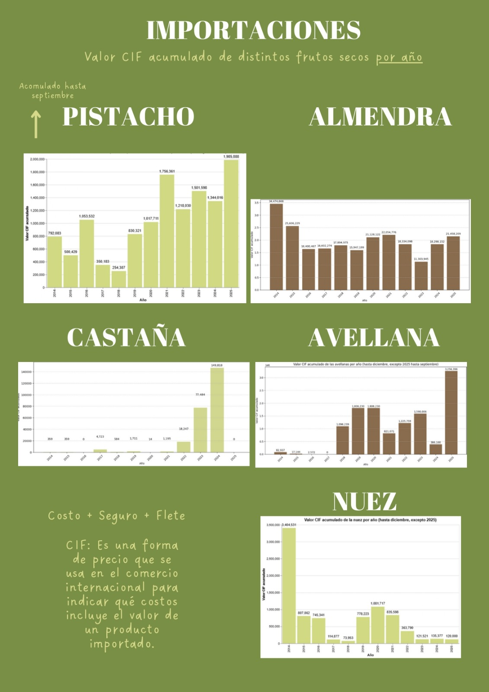

#TENDENCIA
Desde 2020 a 2025 ha evolucionado el interés digital en Chile por los pistachos, comparándolo con un fruto seco tradicional (la nuez) y con un producto viral reciente (el chocolate Dubai).
La serie de nueces muestra estacionalidad; pistachos crece sostenidamente; y chocolate dubai irrumpe como fenómeno viral.

Hasta hace pocos años, la nuez predominaba en la cocina tradicional chilena sin competencia significativa. Sin embargo, el ecosistema digital transformó ese panorama. A partir de fenómenos virales en redes sociales, el pistacho comenzó a ganar terreno, impulsado particularmente por el impacto del llamado “chocolate dubai”, un postre recubierto en chocolate blanco y pistacho que alcanzó su peak histórico en Google Trends durante 2024, justo el año en que se volvió viral. Ese impulso marcó un antes y un después: las búsquedas sobre pistacho se dispararon y con ellas el interés por recetas, preparaciones y productos relacionados.
La popularidad del pistacho se vio alimentada por su estética asociada al lujo, la sofisticación y el consumo globalizado, transformándolo en un símbolo aspiracional y trendy. Cafeterías, pastelerías y creadores de contenido comenzaron a incorporarlo de manera recurrente, dando origen a un repertorio de reels y videos que lo situaron como un nuevo objeto de deseo gastronómico. Aunque la nuez sigue estable en la preferencia nacional, el pistacho dejó de ser un producto de nicho. Su presencia en las búsquedas, la creciente oferta local y su repetición constante en redes evidencian que su ascenso ya no responde a una moda pasajera, sino a la consolidación de un mercado emergente que refleja cómo las tendencias globales se filtran en el consumo cotidiano del país.
IMPORTACIONES
¡Chile está importando más pistachos que nunca!

El fenómeno digital tiene un correlato directo en los números. En 2025, las importaciones de pistachos en Chile alcanzaron niveles inéditos, superando en solo nueve meses —con datos disponibles solo hasta septiembre— todos los registros acumulados entre 2014 y 2024. Esto significa que Chile importó más pistachos en tres cuartos de año de lo que había comprado en cualquier año completo de la última década.
Para comprender este fenómeno es clave considerar el valor CIF (Costo, Seguro y Flete), que corresponde al costo total en dólares estadounidenses que Chile paga por los pistachos importados. Este indicador incluye el precio de compra del producto, su transporte internacional y el seguro asociado al traslado, permitiendo medir con precisión cuánto invierte el país en abastecerse de este fruto seco. En 2025, el valor CIF acumulado superó por amplio margen al de frutos secos como la avellana, la castaña y la nuez. Solo la almendra, con un arraigo industrial más antiguo, mantiene un valor superior.
Los gráficos de importación evidencian un ascenso contundente. El análisis mensual muestra picos claros en ciertos periodos del año, lo que sugiere una demanda altamente concentrada en tramos específicos. Por su parte, el acumulado anual confirma un crecimiento explosivo que no responde a variaciones aisladas, sino a un cambio estructural: empresas, cafeterías, pastelerías y supermercados aumentaron su demanda y comenzaron a incorporar el pistacho en nuevas líneas de productos. En términos simples, la industria chilena está comprando y usando más pistachos que nunca.
HECTÁREAS
El pistacho, aunque aún pequeño, se encuentra en plena fase de crecimiento.
El boom del pistacho no se limita a las redes ni al comercio exterior; también se expresa en el número creciente de productos que hoy lo incorporan y en la forma en que la industria agrícola observa el fenómeno. Lo que antes era un fruto asociado a aperitivos elegantes o a heladerías italianas comenzó a aparecer en múltiples formatos: desde el chocolate Dubai hasta barquillos, panes, mantequillas, alfajores, helados y otras preparaciones presentes tanto en pastelerías artesanales como en tiendas gourmet y supermercados. Esta diversificación convirtió al pistacho en un ingrediente cotidiano, disponible en distintos segmentos del mercado.
En paralelo, la atención sobre el pistacho comienza a traducirse en interés agrícola. Aunque Chile aún no cuenta con grandes extensiones plantadas en comparación con otros cultivos, las cifras muestran un crecimiento sostenido en las hectáreas destinadas al pistacho. Este aumento responde directamente a la demanda interna y al potencial económico que productores y empresas identifican en este fruto. Los gráficos que acompañan el análisis permiten ver cómo esta expansión, aunque incipiente, se articula con el aumento del consumo y de las importaciones, consolidando una cadena que va desde la viralización digital hasta la producción nacional.
El pistacho, aunque todavía no tiene una gran presencia, se encuentra en una fase de crecimiento y analisis dentro de las regiones de Valparaíso y Ñuble. Los veranos calurosos e inviernos fríos ofrecen condiciones óptimas para su cultivo, y gracias a la introducción de nuevas variedades y tecnologías agrícolas, este fruto comienza a perfilarse como una alternativa llamativa para los productores nacionales.
El interés por el pistacho no es nuevo. Durante la década de 1980 se realizaron intentos por establecer su cultivo en Chile, pero debido a las escasas variedades disponibles en ese entonces no se logró una adecuada adaptación al clima local. Hoy, con mejoras en los conocimientos técnicos y una demanda internacional en aumento, se conecta un fenómeno económico que conlleva la importación y producción de pistachos en Chile con la dimensión cultural relacionada a las tendencias, redes sociales y "consumo aspiracional". El boom del pistacho no es solo moda; su crecimiento sostenido es consistente con un producto que deja de ser de nicho para pasar a ser un fenómeno que está transformando el mercado local y reapareciendo como una oportunidad competitiva.
Desde 2011 hasta 2024, la superficie de pistacho en Chile ha crecido un 153%. Aunque este aumento parece significativo, sigue siendo menor si se compara con los grandes frutos secos del país: el avellano europeo creció un 1133%, el castaño un 298%, y el nogal un 171%. El almendro, en cambio, registró una disminución de –2,6% en el mismo período.
La curva de crecimiento del pistacho, reflejada en importaciones crecientes, gráficos comparativos con otros frutos secos y mayor superficie plantada, demuestra que Chile no solo está consumiendo más pistacho, sino preparándose para producirlo.
El pistacho, tanto en nuestro país como a nivel global, pasó de ser un lujo ocasional a un ingrediente cotidiano. Lo que partió como un fenómeno viral se convirtió en un actor influyente dentro del mercado de frutos secos. Su presencia se multiplicó en redes sociales, sus importaciones se dispararon y comenzó a instalarse en la mente de los productores locales. Hoy, el pistacho aparece en cafeterías, heladerías y supermercados, integrándose en diversas recetas nacionales. Lo que empezó como una moda terminó transformándose en un nuevo mercado dentro del país, reflejando un cambio real en el consumo nacional.